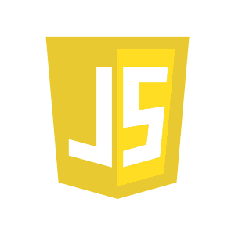
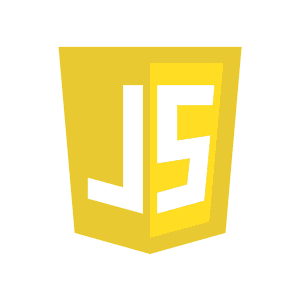

HELLO, I AM NOMER II
I’m a first-year Computer Science student specializing in Software Engineering at Manuel S. Enverga University
Foundation.
I am currently diving into the world of code—sometimes getting lost in it, sometimes feeling like a
genius, but always enjoying
the process. I love exploring how apps, websites, and systems are built, and I’m excited
to develop skills that will let me turn
ideas into something real (and maybe even useful!). I’m still figuring out my
place in the tech world, but I’m driven by
curiosity, creativity, and the thrill of solving problems one line of code
at a time. As I go through this journey, I’m hoping to
learn from every challenge, meet people with the same passion,
and slowly build my own path in software development.


 
